Academic Profile
My academic contributions include research publications and service to the community.
Selected Publications
Publications are selected and listed chronologically. For the full list, please check Google Scholar.
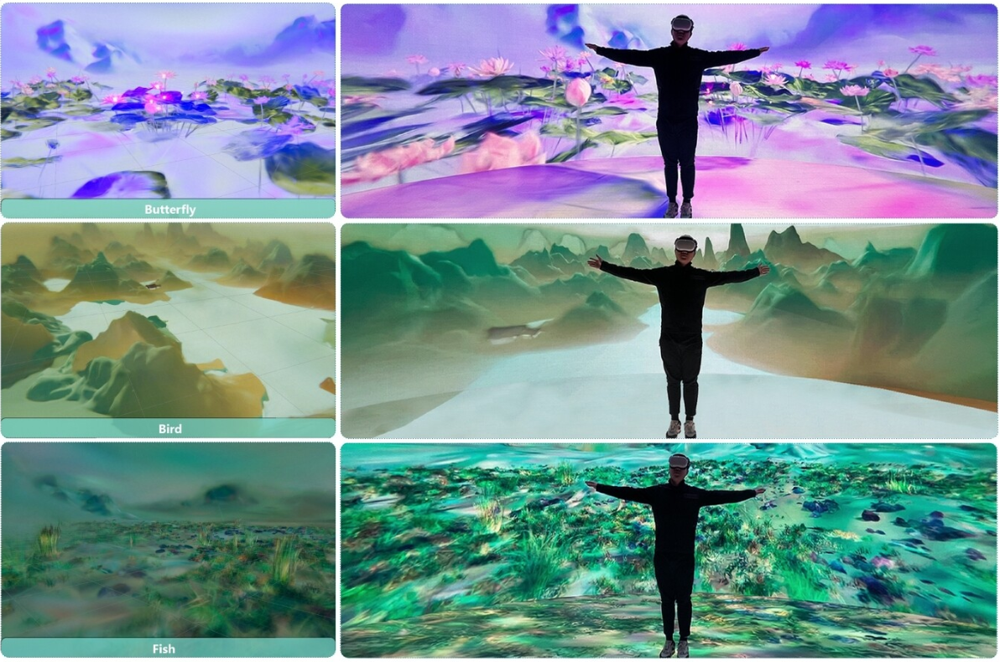
The Dream of Zhuang Zhou: Entangled Agencies in Multispecies Virtual Reality
SIGGRAPH Asia 2025
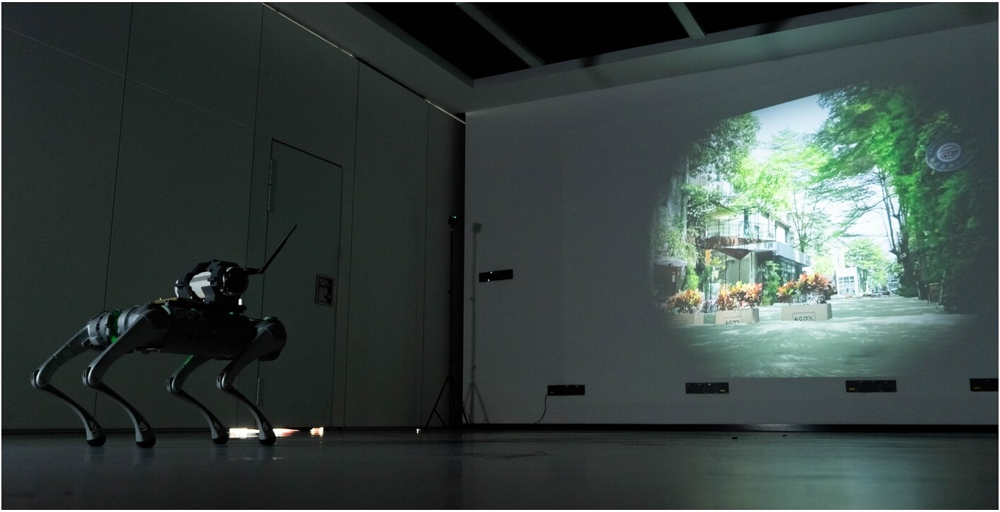
Drift of the Uncharted: A Speculative Fiction About Rising Sea-Level Landscapes through Robotic Performance
SIGGRAPH Asia 2025

EmoVid: A Multimodal Emotion Video Dataset for Emotion-Centric Video Understanding and Generation
AAAI 2026 (Oral)
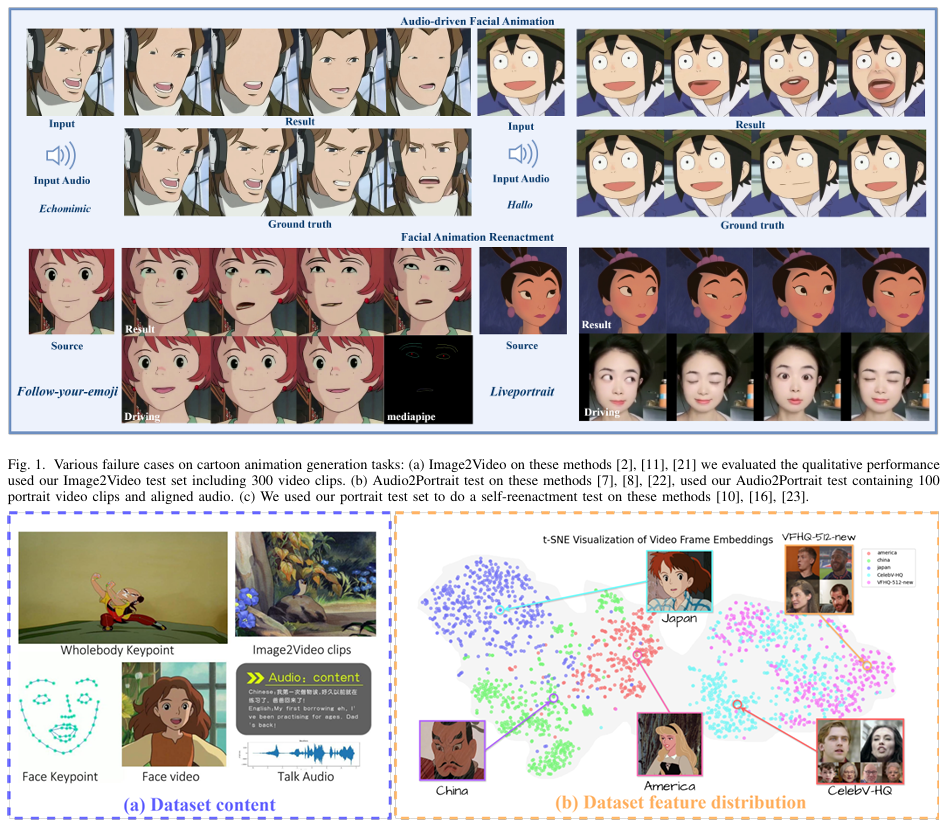
MagicAnime: A Hierarchically Annotated, Multimodal and Multitasking Dataset with Benchmarks for Cartoon Animation Generation
arXiv preprint
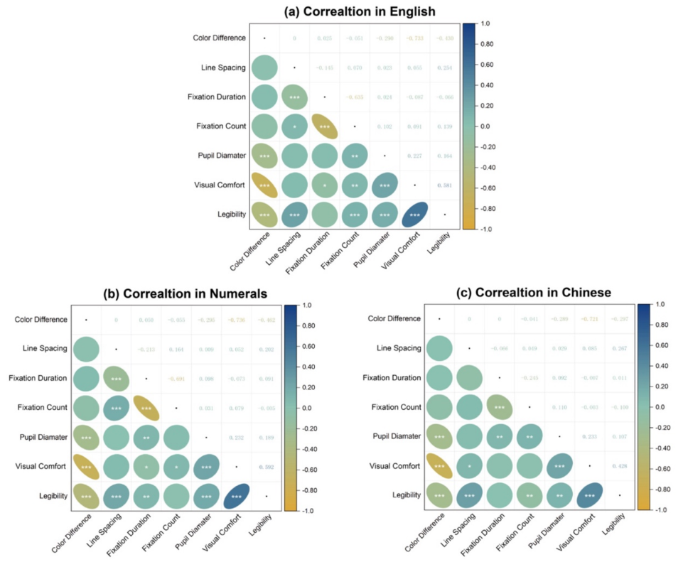
Tailored information display: Effects of background colour and line spacing on visual search across different character types–An eye-tracking study
Displays
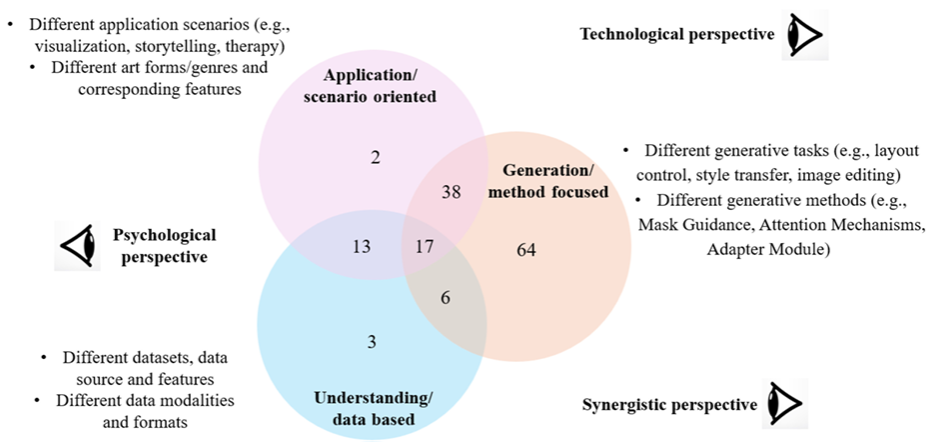
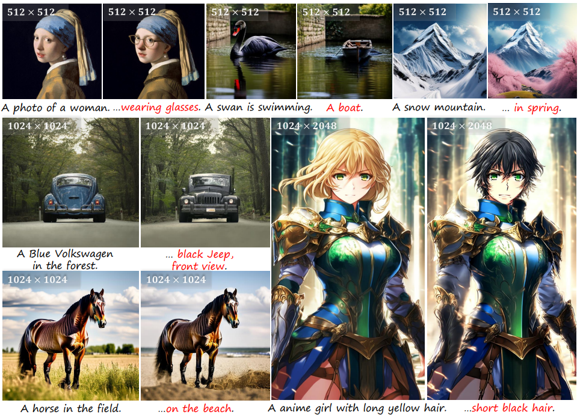

MagicScroll: Nontypical Aspect-Ratio Image Generation for Visual Storytelling
IEEE VR 2025 (Invited Poster Presentation at SIGGRAPH Asia 2025)

EmotionLens: Interactive visual exploration of the circumplex emotion space in literary works via affective word clouds
Visual Informatics
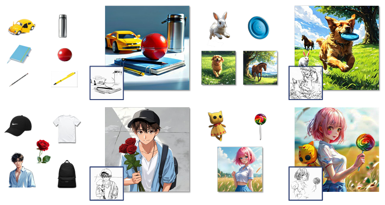
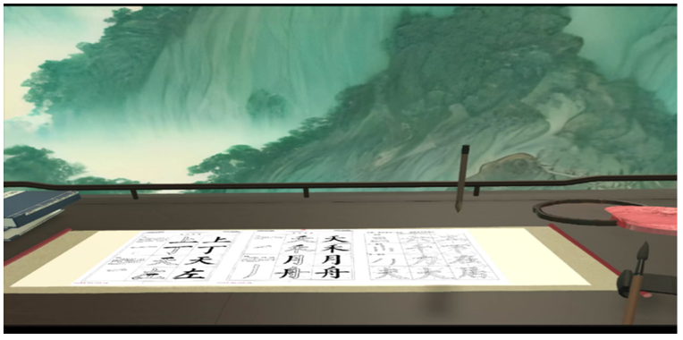
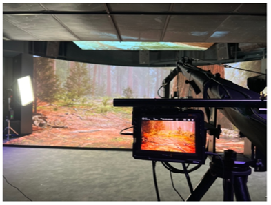
From expanded cinema to extended reality: How AI can expand and extend cinematic experiences
VINCI 2023
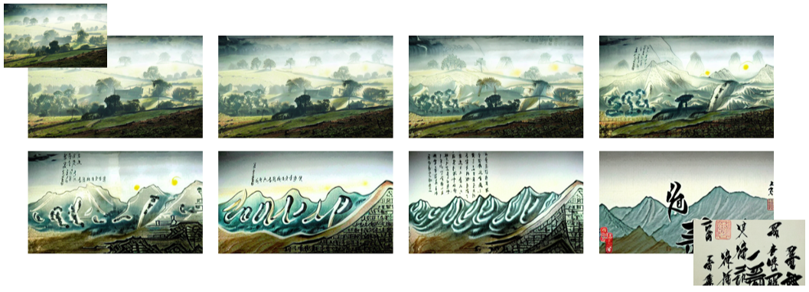
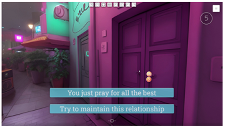
Professional Activities
Invited Reviewer
I actively serve as a reviewer for top-tier conferences and journals in Computer Graphics, Signal Processing, Cultural Heritage, Multimedia, and HCI, etc.
- Conferences: ICASSP, ICME, TEI, Creativity & Cognition, ChinaCI, etc.
- Journals: npj Heritage Science, International Journal of Human–Computer Interaction, IEEE Computer Graphics and Applications, Cogent Arts & Humanities, Visual Computing for Industry, Biomedicine, and Art, Scientific Reports, etc.
Teaching Assistant
- CMAA 5001: Foundations of Computational Media and Arts (Fall 2023)
- CMAA 5025: Computational Techniques for Sketch-based Creativity (Fall 2023)